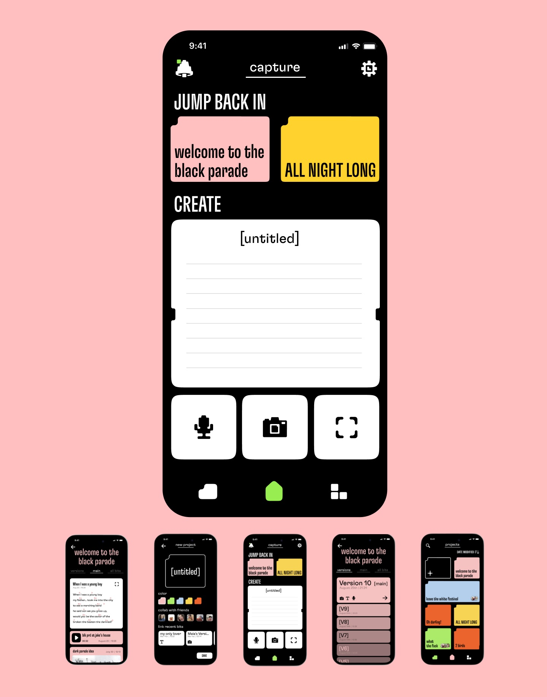
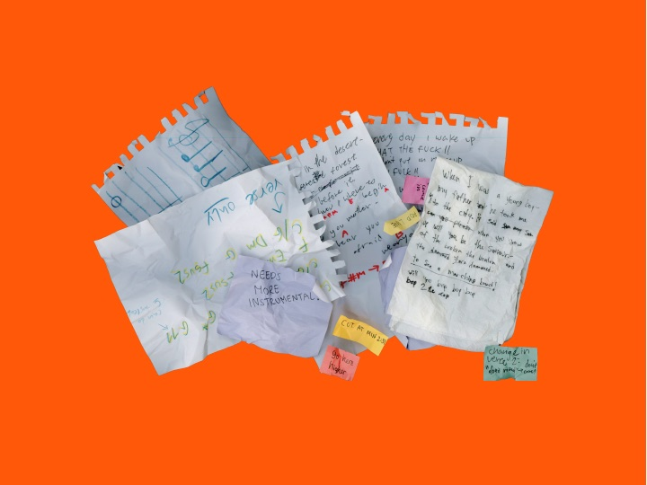
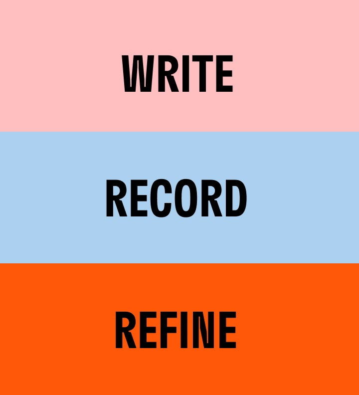
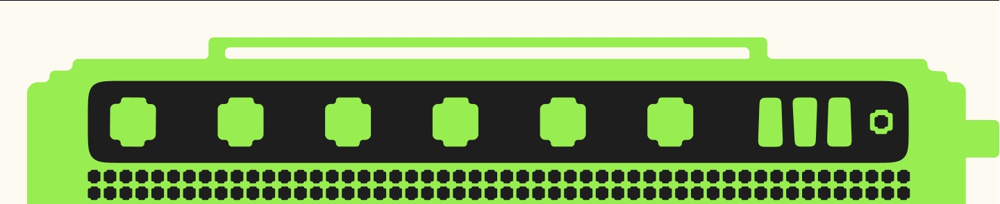

too many versions
too many places
& too easy to lose
When creating music, short or quick materials are created and used along the way. Musicians often keep these materials across many platforms.
When materials are inaccessible, lost, sometimes ruined, or forgotten, the workflow becomes frustrating and challenging.
Our Solution:
Write lyrics, capture ideas, record drafts and build your projects without the usual mess in between.

I designed this app end-to-end alongside a fellow designer friend. We shared responsibility across the process, from research and small-scale studies to ideation, prototyping, and defining the app’s visual language.
I took lead on key parts of the design process, in development of the visual language, designing the landing page, and building the final full-flow prototype.
